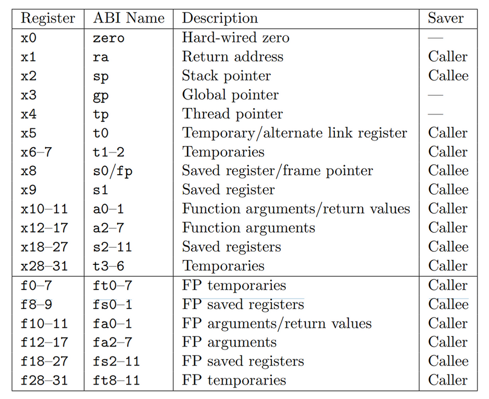
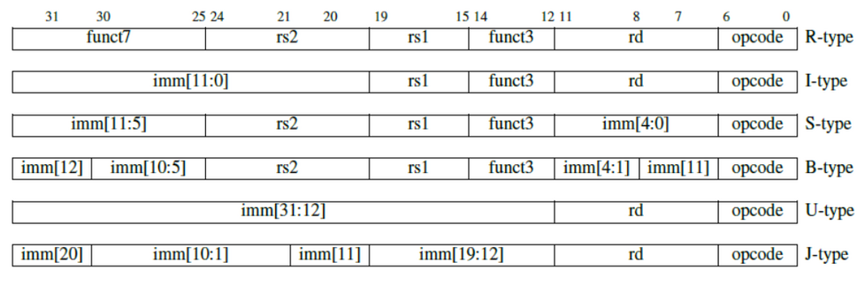

RISC-V Tutorial
Table of Contents
1 RISC-V Tutorial
https://riscv.org/technical/specifications/
1.1 Setup Environment
1.1.1 Install Toolchain
$> sudo apt install gcc-riscv64-linux-gnu $> sudo apt install qemu-user $> sudo ln -s /usr/riscv64-linux-gnu/lib/ld-linux-riscv64-lp64d.so.1 /lib
1.1.2 Build & Run
1.1.2.1 C
$> riscv64-linux-gnu-gcc test.c -Wl,-rpath,/usr/riscv64-linux-gnu/lib/ $> ./a.out hello
1.1.2.2 ASM
1.1.2.2.1 nostdlib
## riscv64-linux-gnu-gcc ./test.s -nostdlib -static
## or riscv64-linux-gnu-as ./test.s -o test.o && riscv64-linux-gnu-ld ./test.o -o ./a.out
.global _start
_start:
addi a0, x0, 1
la a1, helloworld
addi a2, x0, 13
## 因为是用 qemu + linux 来执行, 所以这里使用的是 linux 的 syscall num
## 64 是 write, 93 是 exit
addi a7, x0, 64
ecall
addi a0, x0, 0
addi a7, x0, 93
ecall
.data
helloworld: .ascii "Hello World!\n"
Hello World!
1.1.2.2.2 stdlib
## riscv64-linux-gnu-gcc test.s -static
.global main
main:
addi sp, sp, -4
sw ra, 4(sp)
la a0, helloworld
li a1, 10
jal printf
li a0, 0
lw ra, 4(sp)
addi sp, sp, 4
jr ra
.data
helloworld: .ascii "Hello World: %d!\n"
Hello World: 10!
1.1.2.3 Debug with QEMU GDB Server
$> qemu-riscv64 -g 12345 ./a.out ;; in another shell $> gdb-multiarch ./a.out (gdb) target remote localhost 12345 Remote debugging using localhost:12345 _start () at test.s:7 7 addi a0, x0, 1
or use a simple wrapper script:
#!/bin/bash if [[ $# == 0 ]]; then echo "usage qemu-gdb.sh <exec>" exit 1 fi app=$1 cat >/tmp/gdb.cmds <<hello target remote localhost:12345 hello qemu-riscv64 -g 12345 ./a.out & qemu_pid=$! gdb-multiarch $app -x /tmp/gdb.cmds kill -9 $qemu_pid &>/dev/null
1.1.2.4 Debug with Spike
1.2 RISC-V Assembly
1.2.1 Overview
RSIC-V ISA 由一个基础指令集 RV32I 和一系列的扩展指令集组成:
- RV32I 针对整数操作的 ISA, 47 条指令
- RV32M 乘法和除法, 8 条
- RV32F 单精度浮点数, 32 条
- RV32D 双精度浮点数, 32 条
- RV32A 原子操作, 11 条
以上所有加起来称为 RV32G, 除此以外, 还有额外两个扩展:
- RV32C 指令压缩
- RV32V 向量操作
1.2.2 Register
RV32I 共定义了 32 个寄存器, 寄存器宽度为 32, 用 XLEN 表示

其中:
- zero 始终为 0, 可以用来实现一些其它指令, 例如 addi t0, zero, 0x1 相当于给 t0 赋值为 1
- ra 是 return address, 函数返回时默认返回地址在 ra, 通过 jalr zero, 0(ra) 返回
- tp 是 thread pointer, 用来实现 Thread Local Storage
- gp 是 global pointer
- a0…a7 做为函数参数, 同时 a0…a1 做为函数返回值
- t0…t6 是 caller saved 通用寄存器
- s1…s11 是 callee saved 通用寄存器
- fp 是 frame pointer, 主要和 Backtrace 有关
- sp
1.2.3 RV32I
1.2.3.1 Overview
RV32I 共 47 条指令, 长度均为 32bit, 分为 6 种格式:

操作码 (operator):
- opcode, 类似的指令有相同的 opcode, 例如:
- I 指令中的 load 指令 opcode 都是 b11
- I 指令中的算术运算都是 b10011
- R 指令都是 b110011
- S 指令都是 b100011, B 指令都是 b1100111
- U 指令为 b110111, J 指令为 b1101111
- funct3, funct7 是对 opcode 的补充, 例如所有的 load 指令的 opcode 都是 b11, 通过 func3 来区分 lb, lh, lw …
操作数 (operand):
- rd 目标寄存器
- rs1 源寄存器 1
- rs2 源寄存器 2
- imm 立即数
其中 U,J 类型需要支持两个操作数, R,I,S,B 支持三个操作数.
I, intermediate
I 指令需要三个操作数: rd, rs1, imm
I 指令包含 imm 和 load 两种操作, 因为两者的用法类似:
- imm: rd(dest), rs1(op1), imm (op2)
- load: rd(dest), rs1(base), imm(offset)
addi:
12 5 3 5 7 ------------------------------ imm[11:0] rs1 000 rd 0010011 ------------------------------ op1 op2 dest
lw:
imm[11:0] rs1 010 rd 0000011 ------------------------------------- offset base dest
R, register-register
R 指令需要三个操作数: rd(dest), rs1(op1), rs2(op2)
以 add 为例:
7 5 5 3 5 7 ------------------------------ 0000000 rs2 rs1 000 rd 0110011 ------------------------------ op1 op2 destS, store
S 指令需要 3 个操作数: rs1(src), rs2(base), imm(offset)
以 sw 为例:
7 5 5 3 5 7 --------------------------------------------- imm[11:5] rs2 rs1 010 imm[4:0] 0100011 --------------------------------------------- offset[11:5] src base offset[4:0]
B, branch
B 指令和 S 格式基本相同, 只是 imm 部分 bit 分配有些不同.
rs1 (op1), rs2 (op2), imm (offset)
以 blt 为例:
imm[12|10:5] rs2 rs1 100 imm[4:1|11] 1100011
imm 使用的是 imm[12:1], 因为 risc-v 指令最短是 16 bit (RV32C), 所以 offset 是 2 字节对齐的, 即 imm[0] 必定为 0, 使用 imm[12:1] 可以使 branch 范围变为 (-4k,+4k)+pc.
`+pc` 是指 pc-relative, B/J 指令都是 pc-relative 的, 它的操作数中的 imm 是跳转目标相对当前 pc 的偏移量.
如果 B 指令要跳转的范围大于 8k 小于 2M, 可以使用 jal:
## before beq s1, s2, L1 ## after bne s1, s2, L2 jal zero, L1
如果跳转范围大于 2M, 则需要换成 jalr:
1: auipc a0, %pcrel_hi(L1) addi a0, a0, %pcrel_lo(1b) bne s1, s2, L2 jalr zero, 0(a0)
U, upper intermediate
U 有两个操作数 rd (dest), imm, 加载 imm 到 rd 的高 20 bit
lui:
imm[31:12] rd 0110111
J, jump
J 指令与 U 指令格式基本相同
jal:
imm[20|10:1|11|19:12] rd 1101111
与 B 指令类似, 没有使用 imm[0], J 跳转范围扩大为 [-1M, +1M]+pc (relocation of jal)
1.2.3.2 Sample
1.2.3.2.1 I-Type Instructions
I 类型指令都是 `xxx rd, rs1, imm` 的形式, 其中 imm 12 bit, 包含以下指令:
- addi
- slti, sltiu
- andi, ori, xori
- slli, srli, srai
- lw, lh, lb
- lhu, lbu
- jalr
## riscv64-linux-gnu-gcc test.s -static
.global main
main:
addi sp, sp, -4
sw ra, 4(sp)
## ------ addi (add imm) ------
la a0, addi_msg
## i 指令的 imm 是 12 bit, 范围是 -2048, 2047, 超过会编译不过
## a1 = zero + (-2048)
addi a1, zero, -2048
jal printf
## ------ slti (set less than imm), sltiu (set less than imm unsigned) ------
la a0, slti_msg
li t0, 1023
## 当 t0 < 1024 时, a1 = 1, 否则 a1 = 0
slti a1, t0, 1024
jal printf
la a0, slti_msg
li t0, 1024
slti a1, t0, 1024
jal printf
la a0, sltiu_msg
li t0, -1
## 当 (unsiged)t0 < (unsigned)1024 时, a1 = 1, 否则 a1 = 0
sltiu a1, t0, 1024
jal printf
## ------ andi, ori, xori ------
la a0, and_or_xor_msg
li t0, 0x11
andi a1, t0, 0x01
ori a2, t0, 0x01
xori a3, t0, 0x01
jal printf
## ------ slli (shift left logical imm) ------
## ------ srli (shift right logical imm) ------
## ------ srai (shift right arithmetic imm) ------
la a0, shift_msg
li t0, 0x11
slli a1, t0, 4
srli a2, t0, 4
li t0, -0x11
srli a3, t0, 4
srai a4, t0, 4
jal printf
## ------ load: lw, lh, lb ------
la a0, load_msg
la t0, load_data
lw a1, 0(t0)
lh a2, 4(t0)
lb a3, 6(t0)
lb a4, 7(t0)
## load 指令会先通过符号扩展 (sign extention) 把数据变成 XLEN 位, 再写入寄存器
## lw, lh, lb 会对数据进行有符号扩展 (高位复制符号位)
## lwu, lhu, lbu 会对数据进行无符号扩展 (高位置 0)
lbu a5, 7(t0)
jal ra, printf
## ------ jalr ------
call jalr_test
## return
li a0, 0
lw ra, 4(sp)
addi sp, sp, 4
jr ra
jalr_test:
## jalr rd, imm(rs1), 相当于 rd=pc+4; pc=imm(rs1)
## jalr 可以用来从函数中返回
## 另外, J 和 B 指令跳转时都是 pc relative 跳转. 通过 I 指令的 jalr
## 可以实现整个地址空间范围的跳转
## jalr 的典型应用是 procedure return 和针对
## `switch ... case` 的 branch table
jalr zero, 0(ra)
.data
addi_msg: .asciz "addi: %d\n"
slti_msg: .asciz "slti: %d\n"
sltiu_msg: .asciz "sltiu: %d\n"
and_or_xor_msg: .asciz "and_or_xor: 0x%x, 0x%x, 0x%x\n"
shift_msg: .asciz "slli: 0x%x, srli: 0x%x, negative: srli: %lld srai: %lld\n"
load_msg: .asciz "load: %d, %d, %d, %d, %d\n"
load_data:
.word 1
.half 2
.byte 3
.byte -4
addi: -2048 slti: 1 slti: 0 sltiu: 0 and_or_xor: 0x1, 0x11, 0x10 slli: 0x110, srli: 0x1, negative: srli: 1152921504606846974 srai: -2 load: 1, 2, 3, -4, 252
1.2.3.2.2 R-Type Instructions
R 类型指令格式为 `xxx rd, rs1, rs2`, 与 I 类型指令有许多类似, 包含以下指令:
- add, sub
- slt, sltu
- and, or, xor
- sll, srl, sra
## riscv64-linux-gnu-gcc test.s -static
.global main
.text
main:
addi sp, sp, -4
sw ra, 4(sp)
## ------ addi (add imm) ------
la a0, sub_msg
li a1, 10
sub a1, zero, a1
jal printf
## ------ slt (set less than imm), sltu (set less than imm unsigned) ------
la a0, slt_msg
li t0, 1023
li t1, 1024
slt a1, t0, t1
jal printf
## ------ and, or, xor ------
la a0, and_or_xor_msg
li t0, 0x11
li t1, 0x01
and a1, t0, t1
or a2, t0, t1
xor a3, t0, t1
jal printf
## ------ sll (shift left logical imm) ------
## ------ srl (shift right logical imm) ------
## ------ sra (shift right arithmetic imm) ------
la a0, shift_msg
li t0, 0x11
li t1, 4
sll a1, t0, t1
srl a2, t0, t1
li t0, -0x11
srl a3, t0, t1
sra a4, t0, t1
jal printf
## return
li a0, 0
lw ra, 4(sp)
addi sp, sp, 4
jr ra
.data
sub_msg: .asciz "sub: %d\n"
slt_msg: .asciz "slt: %d\n"
and_or_xor_msg: .asciz "and_or_xor: 0x%x, 0x%x, 0x%x\n"
shift_msg: .asciz "sll: 0x%x, srli: 0x%x, negative: srl: %lld srai: %lld\n"
sub: -10 slt: 1 and_or_xor: 0x1, 0x11, 0x10 sll: 0x110, srli: 0x1, negative: srl: 1152921504606846974 srai: -2
1.2.3.2.3 S-Type Instructions
S 指令用于 store, 格式为 `xxx rs1, (imm)rs2`, 表示把 rs1 的数据保存到 (imm)rs2的地址上. risc-v 的 load/store 只支持这一种寻址方式, 相当于 x86 的 `寄存器相对寻址 `, 这种寻址方式非常适合表示高级语言中 `data[i]` 这种形式的内存访问
risc-v 的 load/store 没有地址对齐的要求, 即 sw/lw 不需要 4 bytes 对齐
一共有三条指令:
- sw
- sh
- sb
## riscv64-linux-gnu-gcc test.s -static
.global main
.text
main:
addi sp, sp, -4
sw ra, 4(sp)
la t0, test_data
lw t1, 0(t0)
addi t1, t1, 1
sw t1, 0(t0)
la a0, test_msg
lw a1, 0(t0)
call printf
## return
lw ra, 4(sp)
addi sp, sp, 4
li a0, 0
jr ra
.data
test_data: .word 1
test_msg: .asciz "hello: %d\n"
hello: 2
1.2.3.2.4 B-Type Instructions
B 指令用于条件跳转, 它的格式与 S 指令基本相同, 只是 imm 的某些 bit 换了下位置, 格式为 `xxx rs1, rs2, imm`, 表示根据 rs1 的 rs2 比较的结果跳转到 pc+imm 的位置. 有以下几条指令:
- beq
- bne
- blt/bltu
- bge/bgeu
由于 imm encode 为 imm[12:1], 所以跳转的范围为 (-4k, +4k)
riscv 的 b 指令直接比较 rs1, rs2 并跳转, 而不是像 arm 那样拆分成两条指令: 第一条比较并设置 flag, 第二条根据 flag 跳转.
1.2.3.2.5 U-Type Instructions
U 指令用来操作一个 imm 的高位, 可以和其它指令配合来操作 32 位数, 有两条指令:
- lui (load upper imm)
- auipc (append upper imm to pc)
## riscv64-linux-gnu-gcc test.s -static
.global main
.text
main:
addi sp, sp, -4
sw ra, 4(sp)
## ------ lui ------
## lui 加载一个 imm 到寄存器的高 20 位
## 配合 addi 的 12 位 imm, 可以加载 32 位 imm
la a0, lui_msg
lui a1, 1<<16
addi a1, a1, 1
call printf
## 这里用 lui, addi 来加载 lui_msg 地址到 a0
## 但与 la 伪指令效果并非完全相同, 因为通过 lui, addi 方式
## 是对 lui_msg 的绝对地址寻址, 但 la 通常会使用 GOT 或 pc relative 寻址
lui a0, %hi(lui_msg)
addi a0, a0, %lo(lui_msg)
lui a1, 1<<16
addi a1, a1, 1
call printf
## ------ auipc ------
## auipc rd, imm 相当于 rd=pc+(imm<<12), 配合 addi 可以得到相对于 pc 的 32 位地址
1: auipc a0, %pcrel_hi(auipc_msg)
## 这里是用的的 pcrel_lo (1b) 而不是 pcrel_lo(auipc_msg), 是 linker 认识的特殊写法.
## 因为 pcrel_lo 要计算 auipc_msg 低 12 位与 pc 低 12 位的差, 但 addi 时用的 pc 与 auipc
## 时的 pc 已经不同了, addi 处的 pcrel_lo 应当使用上一条指令的 pc 来计算差值
## https://sourceware.org/binutils/docs/as/RISC_002dV_002dModifiers.html
##
addi a0, a0, %pcrel_lo(1b)
call printf
lw ra, 4(sp)
addi sp, sp, 4
li a0, 0
jr ra
.data
lui_msg: .asciz "lui: %x\n"
auipc_msg: .asciz "auipc\n"
lui: 10000001 lui: 10000001 auipc
如果要加载一个 64 位的立即数, 可以有两种方法:
- 通过 ld
- 先加载高 32 位 (lui, addi) 到 x, 然后 x 左移 32 位, 最后加载低 32 位到 x
1.2.3.2.6 J-Type Instructions
J 指令和 U 指令格式类似, 只有一条 jal (jump and link) 指令, 可以支持 2M 范围的 pc 相对跳转
## riscv64-linux-gnu-gcc test.s -static
.global main
.text
main:
addi sp, sp, -4
sw ra, 4(sp)
la a0, hello_msg
jal ra, printf
lw ra, 4(sp)
addi sp, sp, 4
li a0, 0
jr ra
.data
hello_msg: .asciz "hello\n"
hello
1.2.4 Pseudo Instruction
伪指令是 assembler 提供的, 和 ISA 没有关系, 主要是为了方便使用, 尤其是涉及到符号重定位的操作, 例如 la, call 等.
| la rd, symbol | auipc rd, symbol[31:12]; addi rd, rd, symbol[11:0] |
| l{b,h,w,d} rd, symbol | auipc rd, symbol[31:12]; l{b,h,w,d} rd, symbol[11:0](rd) |
| s{b,h,w,d} rd, symbol, rt | auipc rt, symbol[31:12]; s{b,h,w,d} rd, symbol[11:0](rt) |
| fl{w,d} rd, symbol, rt | auipc rt, symbol[31:12]; fl{w,d} rd, symbol[11:0](rt) |
| fs{w,d} rd, symbol, rt | auipc rt, symbol[31:12]; fs{w,d} rd, symbol[11:0](rt) |
| nop | addi x0, x0, 0 |
| li rd, immediate | myriad sequences |
| mv rd, rs | addi rd, rs, 0 |
| not rd, rs | xori rd, rs, -1 |
| neg rd, rs | sub rd, x0, rs |
| negw rd, rs | subw rd, x0, rs |
| sext.b rd, rs | slli rd, rs, XLEN - 8; srai rd, rd, XLEN - 8 |
| sext.h rd, rs | slli rd, rs, XLEN - 16; srai rd, rd, XLEN - 16 |
| sext.w rd, rs | addiw rd, rs, 0 |
| zext.b rd, rs | andi rd, rs, 255 |
| zext.h rd, rs | slli rd, rs, XLEN - 16; srli rd, rd, XLEN - 16 |
| zext.w rd, rs | slli rd, rs, XLEN - 32; srli rd, rd, XLEN - 32 |
| seqz rd, rs | sltiu rd, rs, 1 |
| snez rd, rs | sltu rd, x0, rs |
| sltz rd, rs | slt rd, rs, x0 |
| sgtz rd, rs | slt rd, x0, rs |
| beqz rs, offset | beq rs, x0, offset |
| bnez rs, offset | bne rs, x0, offset |
| blez rs, offset | bge x0, rs, offset |
| bgez rs, offset | bge rs, x0, offset |
| bltz rs, offset | blt rs, x0, offset |
| bgtz rs, offset | blt x0, rs, offset |
| bgt rs, rt, offset | blt rt, rs, offset |
| ble rs, rt, offset | bge rt, rs, offset |
| bgtu rs, rt, offset | bltu rt, rs, offset |
| bleu rs, rt, offset | bgeu rt, rs, offset |
| j offset | jal x0, offset |
| jal offset | jal x1, offset |
| jr rs | jalr x0, rs, 0 |
| jalr rs | jalr x1, rs, 0 |
| ret | jalr x0, x1, 0 |
| call offset | auipc x6, offset[31:12]; jalr x1, x6, offset[11:0] |
| tail offset | auipc x6, offset[31:12]; jalr x0, x6, offset[11:0] |
| fence | fence iorw, iorw |
1.2.5 Relocation
有些指令的操作数是 symbol, symbol 地址在 assembling 阶段无法确定, assembler 只能通过 BFD 写入重定位信息, 后面需要 link edtitor 进行重定位.
1.2.5.1 relocation of `load address`
load address 类的指令 (auipc, lui, la, …) 的操作数是 symbol 时, 可以使用不同的 reloc_type, 例如:
- 使用绝对地址
- PCREL
- TPREL
- GPREL
- GOT
- …
所谓不同的 reloc_type, 是指 linker 计算出真实地址后, 根据 reloc_type 决定如何 patch 指令:
- 要 patch 的数据相对于要 patch 的指令的 offset
- 要 patch 的数据的长度
- 是不是 relative
例如, 若 reloc_type 是 pc-relative (例如 auipc, jal, bne, …), 则会把 `真实地址 ` 与 `要 patch 的指令` 某种差值写入要 patch 的指令的操作数位置.
## riscv64-linux-gnu-gcc test.s -static
.global main
.text
main:
addi sp, sp, -4
sw ra, 4(sp)
## 绝对地址
## 在汇编时并不会真正计算 hello_msg 的地址的高 20 位,
## 因为汇编时无法确定 hello_msg 的地址.
## 这里只是确定一个 symbol (hello_msg) 和 reloc_type (BFD_RELOC_RISCV_HI20),
## 这两个信息包含在 obj 文件中, 最后在链接时由 link editor 处理
lui a0, %hi(hello_msg)
addi a0, a0, %lo(hello_msg)
call printf
## pc-relative 地址
1:
auipc a0, %pcrel_hi(hello_msg)
addi a0, a0, %pcrel_lo(1b)
call printf
## got 地址
1:
auipc a0, $got_pcrel_hi(hello_msg)
addi a0, $pcrel_lo(1b)
## got 需要一个额外的 ld 才能获取 hello_msg 的地址
ld a0, 0(a0)
## la 伪指令在 pic 时会生成类似的代码:
## auipc a0,0x60
## ld a0,956(a0) # 70810 <_GLOBAL_OFFSET_TABLE_+0x8>
## la a0,hello_msg
call printf
lw ra, 4(sp)
addi sp, sp, 4
move a0, zero
ret
.data
hello_msg: .asciz "hello\n"
上面的 `%hi`, `pcrel_hi` 等是 risc-v modifiers, 会导致 obj 中不同的 relocation type:
readelf -a test.o ------ Relocation section '.rela.text' at offset 0x180 contains 17 entries: Offset Info Type Sym. Value Sym. Name + Addend 000000000004 00040000001a R_RISCV_HI20 0000000000000000 hello_msg + 0 000000000004 000000000033 R_RISCV_RELAX 0 000000000008 00040000001b R_RISCV_LO12_I 0000000000000000 hello_msg + 0 000000000008 000000000033 R_RISCV_RELAX 0 00000000000c 000800000012 R_RISCV_CALL 0000000000000000 printf + 0 00000000000c 000000000033 R_RISCV_RELAX 0 000000000014 000400000017 R_RISCV_PCREL_HI2 0000000000000000 hello_msg + 0 000000000014 000000000033 R_RISCV_RELAX 0 000000000018 000500000018 R_RISCV_PCREL_LO1 0000000000000014 .1 + 0 000000000018 000000000033 R_RISCV_RELAX 0 00000000001c 000800000012 R_RISCV_CALL 0000000000000000 printf + 0 00000000001c 000000000033 R_RISCV_RELAX 0 000000000024 000400000014 R_RISCV_GOT_HI20 0000000000000000 hello_msg + 0 000000000028 000600000018 R_RISCV_PCREL_LO1 0000000000000024 .L0 + 0 000000000028 000000000033 R_RISCV_RELAX 0 00000000002c 000800000012 R_RISCV_CALL 0000000000000000 printf + 0 00000000002c 000000000033 R_RISCV_RELAX 0 objdump -d test.o ------ 0000000000000000 <main>: 0: 1171 addi sp,sp,-4 2: c206 sw ra,4(sp) 4: 00000537 lui a0,0x0 8: 00050513 mv a0,a0 c: 00000097 auipc ra,0x0 10: 000080e7 jalr ra # c <main+0xc> 0000000000000014 <.1>: 14: 00000517 auipc a0,0x0 18: 00050513 mv a0,a0 1c: 00000097 auipc ra,0x0 20: 000080e7 jalr ra # 1c <.1+0x8> 24: 00000517 auipc a0,0x0 28: 00053503 ld a0,0(a0) # 24 <.1+0x10> 2c: 00000097 auipc ra,0x0 30: 000080e7 jalr ra # 2c <.1+0x18> 34: 4092 lw ra,4(sp) 36: 0111 addi sp,sp,4 38: 00000513 li a0,0 3c: 8082 ret
1.2.5.1.1 R_RISCV_PCREL_HI2
000000000014 000400000017 R_RISCV_PCREL_HI2 0000000000000000 hello_msg + 0 表示 14: 00000517 auipc a0,0x0 这条指令在重定位时需要用 hello_msg 的真正地址的高 20 位与 pc 的高 20 位的差值 写到原指令中 (00000517) 的 imm 部分.
1.2.5.1.2 R_RISCV_PCREL_LO12
000000000018 000500000018 R_RISCV_PCREL_LO1 0000000000000014 .1 + 0 对应 18: 00050513 mv a0,a0 表示指令的 imm 部分应该用 hello_msg 的低 12 位于 pc 的低 12 的差来填充
1.2.5.1.3 R_RISCV_HI20
000000000004 00040000001a R_RISCV_HI20 0000000000000000 hello_msg + 0 表示 4: 00000537 lui a0,0x0 这条指令的 imm 部分应该用 hello_msg 的真正地址的高 20 位直接填充
1.2.5.1.4 R_RISCV_RELAX
这个和 Linker Relaxation 有关
1.2.5.2 relocation of jal
jal 的操作数也是一个 symbol, 但根据 symbol 的位置, 分为两种情况:
- symbol 在当前 section
- symbol 在其它 section
之所以区分这两种情况, 是因为 section 的地址是不确定的 (Linker Script 可以配置 section 的地址). 但如果 symbol 在当前 section, 因为 jal 的操作数是 PCREL 的, 所以操作数会是确定的值.
symbol 在同一个 section:
.global _start .section .text _start: jal here here: ret
$> /opt/riscv/bin/riscv-elf-gcc test.S -O0 -c $> /opt/riscv/bin/riscv-elf-objdump -d test.o Disassembly of section .text: 0000000000000000 <_start>: 0: 004000ef jal ra,4 <here> 0000000000000004 <here>: 4: 8082 ret
symbol 不在同一个 section:
.global _start .section .text _start: jal here .section .mysection here: ret
$> riscv64-linux-gnu-objdump -d test.o Disassembly of section .text: 0000000000000000 <_start>: 0: 000000ef jal ra,0 <_start> $> readelf -a test.o Relocation section '.rela.text' at offset 0x100 contains 1 entry: Offset Info Type Sym. Value Sym. Name + Addend 000000000000 000400000011 R_RISCV_JAL 0000000000000000 here + 0
R_RISCV_JAL 类型的 reloc_type 和 PCREL 应该类似, 但 JAL 有一个额外的限制是它跳转的范围在 [-1M,1M] 之间, 所以下面的代码会链接不过
.global _start .section .text _start: jal here ## 看起来像 ld 的 bug: jal 的跳转范围应该是 [-1m,1m], 但 ## 这里显示是 [-0.5m,0.5m]... ## .rept 0x7ffff-1 可以链接通过 .rept 0x7ffff .byte 0 .endr here: ret
$> riscv64-linux-gnu-gcc test.S -nostdlib -O0 /tmp/ccuebMtl.o: in function `_start': (.text+0x0): relocation truncated to fit: R_RISCV_JAL against `here' collect2: error: ld returned 1 exit status
Backlinks
Retargeting GCC To RISC-V (Retargeting GCC To RISC-V > binutils > as > append_insn): 2. TODO: 使用 symbol 的指令无法把 symbol 的地址直接编码到指令中, assembling 阶段 只能确定 symbol 和 reloc_type (Relocation), 最终地址在链接阶段由 link editor 来处理.
Backlinks
RISC-V Tutorial (RISC-V Tutorial > RISC-V Assembly > RV32I > Overview): 与 B 指令类似, 没有使用 imm[0], J 跳转范围扩大为 [-1M, +1M]+pc (relocation of jal)
1.2.6 Demo
1.2.6.1 Bubble Sort
// 2022-02-25 19:31 #include <stdio.h> void bubble_sort(int *data, int start, int end) { for (int i = start; i < end; i++) { for (int j = i; j < end; j++) { if (data[j] < data[i]) { /* swap i, j */ int tmp = data[i]; data[i] = data[j]; data[j] = tmp; } } } } void dump(int *data, int len) { for (int i = 0; i < len; i++) { printf("%d ", data[i]); } printf("\n"); } int main(int argc, char *argv[]) { int data[] = {1, 1, 4, 3, 10, 5}; int len = sizeof(data) / sizeof(data[0]); dump(data, len); bubble_sort(data, 0, len); dump(data, len); return 0; }
1 1 4 3 10 5 1 1 3 4 5 10
## riscv64-linux-gnu-gcc test.s -static
.global main
.text
dump:
addi sp, sp, -4
sw ra, 4(sp)
la s0, data
la s1, data_end
addi s0, s0, -8
.Lprint_loop:
addi s0, s0, 8
beq s0, s1, .Lprint_end
la a0, print_fmt
ld a1, 0(s0)
call printf
j .Lprint_loop
.Lprint_end:
la a0, print_fmt_new_line
call printf
lw ra, 4(sp)
addi sp, sp, 4
ret
main:
addi sp, sp, -4
sw ra, 4(sp)
call dump
la t0, data
addi t0, t0, -8
la t2, data_end
.Lmain_outer_loop:
addi t0, t0, 8
beq t0, t2, .Lmain_end
addi t1, t0, -8
.Lmain_inner_loop:
addi t1, t1, 8
beq t1, t2, .Lmain_outer_loop
ld s0, 0(t0)
ld s1, 0(t1)
blt s0, s1, .Lmain_continue
## swap
sd s1, 0(t0)
sd s0, 0(t1)
.Lmain_continue:
j .Lmain_inner_loop
.Lmain_end:
call dump
lw ra, 4(sp)
addi sp, sp, 4
move a0, zero
ret
.data
data:
.dword 1
.dword 1
.dword 4
.dword 3
.dword 10
.dword 5
data_end:
print_fmt_new_line:
.asciz "\n"
print_fmt:
.asciz "%ld "
1 1 4 3 10 5 1 1 3 4 5 10
1.2.6.2 Quick Sort
#include <stdio.h> void swap(int *data, int a, int b) { int temp = data[a]; data[a] = data[b]; data[b] = temp; } void quick_sort(int *data, int start, int end) { int pivort = start; int curr = start + 1; if (curr >= end) { return; } while (curr < end) { if (data[curr] < data[pivort]) { swap(data, curr, pivort + 1); swap(data, pivort, pivort + 1); pivort += 1; } curr += 1; } quick_sort(data, start, pivort); quick_sort(data, pivort + 1, end); } void dump (int* data, int len) { for (int i = 0; i < len; i++) { printf("%d ", data[i]); } printf("\n"); } int main(int argc, char *argv[]) { int data[] = {1, 1, 4, 3, 10, 5}; int len = sizeof(data) / sizeof(data[0]); dump(data, len); quick_sort(data, 0, len); dump(data, len); return 0; }
1 1 4 3 10 5 1 1 3 4 5 10
## riscv64-linux-gnu-gcc test.s -static
.global main
.text
.macro enter
addi sp, sp, -4
sw ra, 4(sp)
.endm
.macro leave
lw ra, 4(sp)
addi sp, sp, 4
move a0, zero
ret
.endm
print_data:
enter
la s0, .Ldata_start
la s1, .Ldata_end
addi s0, s0, -8
.Lprint_loop:
addi s0, s0, 8
beq s0, s1, .Lprint_end
la a0, .Lprint_fmt
ld a1, 0(s0)
call printf
j .Lprint_loop
.Lprint_end:
la a0, .Lprint_fmt_new_line
call printf
leave
quick_sort:
addi sp, sp, -64
sw ra, 8(sp)
sw s0, 16(sp)
sw s1, 24(sp)
sw s2, 32(sp)
sw s3, 40(sp)
sw s4, 48(sp)
sw s5, 56(sp)
sw s6, 64(sp)
## gnu as 本身并不支持 define, 这里依赖 gcc 的 preprocessor
## 来处理 define, 所以需要用 gcc 编译而不能用 as
##
#define end s6
#define start s0
#define loop s1
#define pivort s2
#define loop_v s3
#define pivort_v s4
#define tmp s5
move start, a0
move end, a1
move pivort, start
addi loop, a0, 8
bge loop, end, .Lquick_sort_end
addi loop, loop,-8
1:
addi loop, loop, 8
bge loop, end, 1f
ld loop_v, 0(loop)
ld pivort_v, 0(pivort)
bge loop_v, pivort_v, 1b
## swap
ld tmp, 8(pivort)
sd loop_v, 8(pivort)
sd tmp, 0(loop)
## swap
ld tmp, 8(pivort)
sd pivort_v, 8(pivort)
sd tmp, 0(pivort)
## inc pivort
addi pivort, pivort, 8
j 1b
1:
move a0, start
move a1, pivort
call quick_sort
addi a0, pivort, 8
move a1, end
call quick_sort
.Lquick_sort_end:
lw ra, 8(sp)
lw s0, 16(sp)
lw s1, 24(sp)
lw s2, 32(sp)
lw s3, 40(sp)
lw s4, 48(sp)
lw s5, 56(sp)
lw s6, 64(sp)
addi sp, sp, 64
ret
main:
enter
call print_data
la a0, .Ldata_start
la a1, .Ldata_end
call quick_sort
call print_data
leave
.data
.Ldata_start:
.dword 4
.dword 3
.dword 10
.dword 5
.rep 2
.dword 3
.endr
.fill 2, 8, 1
.space 8, 0xff
.Ldata_end:
.Lprint_fmt_new_line:
.asciz "\n"
.Lprint_fmt:
.asciz "%ld "
4 3 10 5 3 3 1 1 -1 -1 1 1 3 3 3 4 5 10
1.3 GNU Assembler
1.3.1 label
- .L 开头的 label, 不会出现在符号表中
- 数字形式的 label 如 1:, 2: 是 local label, 它们可以重复定义, 通过 1b, 1f 的形式去引用当前位置后面或前面的 label. as 内部会让它们有唯一的名字
1.3.2 directive
- `.lcomm test_data, 1024` 相当于 static char test_data[1024]={0}; `.comm test_data, 1024` 相当于 char test_data[1024]={0}, 即两者可以在 .bss 上分配空间, 但 .lcomm 产生 local 符号, .comm 产生 global 符号
- `.space 10, 1` 相当于连接 10 个 .byte 1
- `.fill 10, 8, 2 ` 相当于 10 个 .dword 2
.rep N, endr
.rept 3 .word 10 .endr 相当于 .word 10 .word 10 .word 10
- .word, .dword, .half, .byte, .float
- .ascii "hello", .asciz "hello"
- .global main
- .include "header.S"
- .macro, .endm
- .section
- .equ constant 0x1234
- align/balign
1.3.3 risc-v modifiers
https://sourceware.org/binutils/docs/as/RISC_002dV_002dModifiers.html
symbol 是一个 32 bit 地址, 并没有直接操作 32bit imm 的指令, 需要用 lui, auipc 去操作 symbol 的高 20 位,再用 addi 操作低 12 位, 所以需要 %hi, %lo 等 modifier. 这些 modifier 的作用实际上是设置目标文件中的 .rela section 的 relocation type, link editor 在链接时会根据这个 type 决定重定位时在什么位置写入什么数据
- %lo(symbol), %hi(symbol)
- %pcrel_hi(symbol), %pcrel_lo(label)
- pcrel_hi 会计算 (symbol)>>12-(pc>>12)
- pcrel_lo 会计算 (symbol&0xfff)-(pc&0xfff)
- %got_pcrel_hi(symbol)
1.4 Standard Extention
1.4.1 RV32M
RV32M 有 8 条 R 指令:
mul, mulh, mulhu, mulhsu
mul 用来获得两个 32 bit 数乘法的低 32 bit
mulh (mul high) 用来获得两个 32 bit 数乘法的高 32 bit
mulhu (mul hight unsigned) 用来获得两个 unsigned 32 bit 数乘法的高 32 bit
mulhsu (mul hight signed unsigned) 用来获得一个 unsigned 32 bit 数和一个 signed 32 bit 数相乘的高 32 bit
div, divu, rem, remu
div 获得商, rem 获得余数, 这里的除法是整数除法
## riscv64-linux-gnu-gcc test.s -static
.global main
.text
main:
addi sp, sp, -8
sd ra, 8(sp)
li t0, 3
li t1, 2
mul a1, t0, t1
div a2, t0, t1
rem a3, t0, t1
la a0, .Lprint_fmt
call printf
ld ra, 8(sp)
addi sp, sp, 8
move a0, zero
ret
.Lprint_fmt:
.asciz "%lx %lx %lx\n"
6 1 1
1.4.2 RV32F and RV32D
RV32{F,D} 是针对浮点数的指令, 浮点数的格式是 IEEE754
除了用于 load/store 的:
- flw (float load word)
- fsw (float store word)
- fld (float load double word)
- fsd (float store double word)
其它都是 R 指令, 且都通过 .{s,d} 后缀区别 single precision 和 double precision, 例如:
1.4.2.1 算术运算
- fadd.{s,d}
- fsub.{s,d}
- fmul.{s,d}
- fdiv.{s,d}
- fsqrt.{s,d}
- fmin.{s,d}
- fmax.{s,d}
1.4.2.2 比较运算
rv32f 没有提供 v32i 的 bne 类似条件跳转的指令, 但提供了浮点比较指令, 比较的结果放在 rd 中, 再使用 x 寄存器上的条件跳转指令进行跳转, 例如:
flt x5，f1，f2 bne x5，x0，exit
- feq.{s,d}
- flt.{s,d}
- fle.{s,d}
1.4.2.3 浮点与定点互相搬运
f 寄存器与 x 寄存器互相复制
fmv.x.{w,d}
w 表示单精度, d 表示双精度
fmv.x.w a0, fa0
fmv.{w,d}.x
fmv.w.x fa0, a0
1.4.2.4 寄存器
所有浮点操作使用独立的 f0~f31 寄存器, 和 rv32i 使用的 x 寄存器有类似的别名, 例如:
- ft0~ft11 是 caller saved temp register
- fs0~fs11 是 callee saved register
- fa0~fa7 用来保存 argument 和 return value, 同样是 caller saved
1.4.2.5 调用约定
与 rv32i 类似, rv32{f,d} 也使用 fa0~fa7 传递参数, 例如, foo(int a, float b) 会使用 a0 读取 a, fa0 读取 b.
## riscv64-linux-gnu-gcc test.s -static
.global main
.text
foo:
addi sp,sp,-16
sd ra,8(sp)
## 这里是 gcc 生成的代码, 实际上可以用 fmv.x.d a2, fa0 代替 fsd/ld
## fmv.x.d a2, fa0
fsd fa0,16(sp)
ld a2,16(sp)
mv a1,a0
la a0,.Lprint_fmt
call printf
ld ra,8(sp)
addi sp,sp,16
ret
main:
addi sp, sp, -8
sd ra, 8(sp)
li a0, 0x1234
la t0, 1f
fld fa0, 0(t0)
call foo
ld ra, 8(sp)
addi sp, sp, 8
move a0, zero
ret
1:
.double 1.1
.Lprint_fmt:
.asciz "%x %f\n"
1234 1.100000
关于 printf 这种 variadic function, 有特殊的处理: 使用 a0, a1, a2 … 而不使用 fa0, fa1, …, 需要调用者用 fmv.x.{w,d} 把浮点搬运到整数寄存器.
## riscv64-linux-gnu-gcc test.s -static
.global main
.text
main:
addi sp, sp, -8
sd ra, 8(sp)
la a0, .Lprint_fmt
li a1, 0x1234
la t0, 1f
## 直接做为整数 load
ld a2, 0(t0)
## 或者使用 fmv.x.d 搬运一次
## fld fa0, 0(t0)
## fmv.x.d a2, fa0
call printf
ld ra, 8(sp)
addi sp, sp, 8
move a0, zero
ret
1:
.double 1.1
.Lprint_fmt:
.asciz "0x%x %f\n"
0x1234 1.100000
1.4.3 RV32A
RV32A 定义了原子操作 (atomic operation)
1.4.3.1 CAS
其它平台例如 x86 提供了 compare and swap (CAS) 类操作实现 read-modify-write 做为原子操作的原语, 以 cmpxchg 指令为例, 实现一个 atomic_inc 的代码大约是:
https://www.felixcloutier.com/x86/cmpxchg
## 这段代码实现的功能是 *mem += 1
la t2, mem
lw t0, 0(t2)
retry:
addi t1, t0, 1
cmpxchg t0, t2, t1
beqz zf, retry
- load mem 到 t0
- t1=t0+1
- 比较 t0 和 mem 的值
- 若相等, 表示没有 race, 把 t1 写入 mem, 标志寄存器 zf 置位
- 若不相等, 表示有 race, 把 mem 写入 t0, 标志寄存器 zf 复位
所以 cmpxchg 共需要操作四个寄存器:
- cmp 的两个寄存器
- 要写入的新值的寄存器
- 标志寄存器
RV32A 没有提供 CAS, 因为它的指令无法编码 4 个寄存器, 做为替代, 它提供了 Atomic Memory Operation (AMO) 和 Load Reserved/Store Condition (LR/SC)
Backlinks
Retargeting GCC To RISC-V (Retargeting GCC To RISC-V > newlib/glibc > atomic 相关): 例如 riscv 可以用 LR/SC 实现 libc 要求的 atomic_compare_and_exchange_bool_acq 做 CAS.
1.4.3.2 AMO
amo 是 R 指令, 包括: amo{add, and, or, swap, xor, max, maxu, min, minu}.w
amo 指令不像 cmpxchg 或 lr/sc 一样会失败.
lr/sc 会失败是因为它们需要先 read & update, 然后 write 时会有可能因为内存数据已经被修改导致 read & update 得到的结果无效, 从而导致失败.
amo 不需要 read, 因为它是直接在原数据基础上 update, 所以它不会失败. 但限制是它能做的 update 是预定好的: add, and, or, …, 想实现一个没有定义的 update 例如 `mem[x]=mem[x]*2` 是不可能的.
.global main .text main: addi sp, sp, -8 sd ra, 8(sp) ## amoadd.w 相当于 rd=offset(rs2)=rs1+offset(rs2) la a0, print_fmt la t0, data li t2, 10 amoadd.w a1, t2, 0(t0) call printf ## amoswap 相当于 rd=offset(rs1); offset(rs1)=rs2 la a0, print_fmt la t0, data addi t2, zero, 1 amoswap.w a1, t2, 0(t0) call printf la a0, print_fmt la t0, data lw a1, 0(t0) call printf ld ra, 8(sp) addi sp, sp, 8 move a0, zero ret .data print_fmt: .asciz "%d\n" data: .word 10
10 20 1
使用 amoswap 实现的 spinlock:
## a0 地址为 1 时表示 locked, 为 0 表示 unlocked
li t0, 1
1: amoswap.w.aq t1, t0, (a0)
bnez t1, 1b
## acquired
## ...
amoswap.w.rl zero, zero, (a0)
Backlinks
Retargeting GCC To RISC-V (Retargeting GCC To RISC-V > newlib/glibc > atomic 相关): 另外, libc 会使用 CAS 实现 atomicmax, min, …, 但 riscv 可以提供自己的基于 AMO 的实现
1.4.3.3 LR/SC
LR/SC 成对出现, 且需要操作相同的地址, 有点类似于把 cmpxchg 拆成两条指令
.global main .text main: addi sp, sp, -8 sd ra, 8(sp) la t0, data ## 成对的 lr/sc 需要操作相同的地址 t0 ## 读取 t0 的旧数据 1: lr.w t2, 0(t0) ## 要写入 t0 的新数据 addi t2, t2, 10 ## 若 t0 中途被修改, 则不会写入新数据, 且 t3 会返回 0 ## 否则写入新数据, 且 t3 返回 1 sc.w t3, t2, 0(t0) bnez t3, 1b la a0, print_fmt lw a1, data call printf ld ra, 8(sp) addi sp, sp, 8 move a0, zero ret .data print_fmt: .asciz "%d\n" data: .word 10
20
使用 lr/sc 实现的 spinlock:
## lock 1: lr.w t0, (a0) bnez 1b li t0, 1 sc.w t1, t0, (t0) bnez t1, 1b ## unlock 1: lr.w zero, (a0) sc.w t1, zero, (t0) bnez t1, 1b
Backlinks
Retargeting GCC To RISC-V (Retargeting GCC To RISC-V > newlib/glibc > atomic 相关): 例如 riscv 可以用 LR/SC 实现 libc 要求的 atomic_compare_and_exchange_bool_acq 做 CAS.
1.4.4 RV32C
RV32C 代表 compat, 即把一部分指指令替换为 16 bit 的形式, 之所以有些指令可以压缩, 是因为:
- 只是 10 个寄存器是经常访问的 (a0~a5, s0, s1, sp, ra), 所以不需要用 5 bit 来 encode 寄存器
- 有些指令的 rs, rd 是相同的, 例如 addi s0, s0, 1
- imm 有时很小, 不需要 12 bit 编码
C 指令命名为 c.xxx,
- c.mv rd, rs <=> addi rd, rs, 0
- c.addi rd, imm <=> addi rd, rd, imm
- c.ldsp ra, 8(sp) <=> ld ra, 8(sp)
- c.jr ra <=> jalr zero, 0(ra)
- …
assember 会自动将伪指令或某些指令替换成 C 指令, 除非通过编译器参数例如 `-march=rv64g` 禁用 RV32C
1.4.5 RV32V
RV32V 定义了向量操作, 和 SIMD 不同的是, 它定义向量寄存器 v0, v1 …, 且通过setvl 指定要操作的向量的长度, 而不是像 SIMD 那样把长度嵌入在指令中.
目前 (2022/2) gcc 的 rivc-v 扩展还不支持 RV32V
1.4.6 RV64G
针对 64 bit 的扩展. RV32G 的指令可以直接在 RV64G 使用, 指令格式都没有变, 只是 XLEN 变成 64.
为了在 RV64G 中支持 32 bit 的计算, 提供了带 w 后缀的指令, 例如 `addiw a0,x0,1`, 它会把 32 bit 截断的结果写入 a0.
另外, RV64G 还添加了几个带 d 后缀的指令, 用来支持 double word
1.4.6.1 rv64i
- add{i}.w, sub{i}.w
- sll{i}.w, srl{i}.w, sra{i}.w
- ld (load double word), 加载 64 bit double word (和 lb, lh, lw 对应)
- lwu
1.4.6.2 rv64m
- mulw
- div{u}.w, rem{u}.w
1.4.6.3 rv64f/rv64d
- fmv.d.x, fmv.x.d
1.4.6.4 rv64c
- c.add{i}.w
1.4.6.5 rv64a
xxx.d 与 xxx.w 对应, 例如 amoadd.d
1.5 Privileged ISA
1.5.1 Overview
https://riscv.org/wp-content/uploads/2017/05/riscv-privileged-v1.10.pdf
https://danielmangum.com/posts/risc-v-bytes-privilege-levels/
RISC-V 主要有 M (machine), S (supervisor), U (user) 三种模式.
- M 是最基础的, 权限最高的模式, 适用于裸系统
- S 用来运行 OS
- U 用来运行应用程序
通过 ecall 和 {m,s}ret 指令可以在模式之间转换:
- mret
- M -> S
- jump to mepc (machine excepiton pc)
- sret
- S -> U
- jump to sepc (supervisor exception pc)
- ecall
- U -> S 或 S -> M
- jump to stvec (supervisor trap vector) (或 mtvec (machine trap vector))
通过 ecall 进入 S (或 M 模式) 前, sepc (或 mepc) 自动被设置为当前 pc, 然后跳转到 stvec (或 mtvec), 后者称为中断向量, stvec 执行完以后需要调用 sret (或 mret) 返回到之前模式, 同时更新 pc 为 sepc (或 mepc). 需要注意的是由于 ecall 保存的 sepc 为当前 pc (而不是 pc+4), 所以针对 ecall 的 stvec 里需要把 sepc+4 避免死循环.
低权限模式无法设置高权限模式的 vec, 所以提升权限后只能执行高权限预设的动作, 例如 syscall
前面提到的 mepc, sepc, stvec, mtvec 都是 CSR (control status register), Privileged ISA 给 CSR 预留了 12 bit 的命名空间 (普通的 x 寄存器只有 5 bit 命名空间)
1.5.2 Machine-Level CSRs
misa
Machine ISA, 用来读取硬件对 I, F, D, M, A, C, V…等扩展的支持情况
mvendorid
Machine Vendor ID
marchid
Machine Architecture ID
mimpid
Machine Implementation ID
mhartid
Hart ID, hardware thread ID, 相当于当前 core id
mstatus
Machine Status
- MIE, SIE, UIE 是 interrupt-enable bits
mtvec
Machine Trap-Vector Base-Address
medeleg
Machine Trap Delegation
mie
Machine Interrupt Enable
mtime
Machine Timer
mcycle, minstret, …
Hardware Performance Monitor
mcounteren
counter-enable register
mepc
Machine Exception Program Counter
mcause
Machine Cause Register
1.5.3 Supervisor-Level CSRs
- status
- stvec
- sie
- cycle,instret
- scounteren
- sepc
- scause
satp
Supervisor Address Translation and Protection
1.5.4 Sample
.section .text .global start ## 初始运行在 M 模式 start: ## 一般情况下 mepc 由 S 模式下的 ecall 设置, 这里直接设置了 ## mepc. la t0, supervisor csrw mepc, t0 ## 设置 mtvec 为 m_trap la t1, m_trap csrw mtvec, t1 li t2, 0x1800 csrc mstatus, t2 li t3, 0x800 csrs mstatus, t3 li t4, 0x100 ## 0x100 设置为 mdeleg 表示 ecall 被 delegate 给 S 模式 csrs medeleg, t4 ## mret 会降权为 M, 同时跳转到 mepc 即 supervisor mret m_trap: ## mepc 会自动被设置为后面 s_trap::ecall+4 的地址, 以便 ecall 能返回 csrr t0, mepc ## mcause 为 9, 表示 Environment call from S-mode csrr t1, mcause ## 这里手动设置 mepc 为 supervisor la t2, supervisor csrw mepc, t2 ## mret 降权为 S 并跳转到 supervisor mret supervisor: ## 设置 sepc 为 user la t0, user csrw sepc, t0 ## 设置 stvec 为 s_trap la t1, s_trap csrw stvec, t1 ## sret 会降权为 U 并跳转到 sepc 即 user sret s_trap: csrr t0, sepc ## scause 为 8, 表示 Environment call from U-mode csrr t1, scause ## ecall 提权到 M 并调用 mtvec 即 m_trap ecall user: csrr t0, instret ## ecall 会提权到 S 并调用 stvec 即 s_trap ecall
1.6 Misc
1.6.1 RISC-V vs. MIPS
risc-v 与 mips 有许多相同的地方, 实际上 riscv gnu toolchain 主要是在 mips 的基础上修改的.
riscv 与 mips 相似的地方:
- 指令长度都是 32 bits
- 都有 32 个通用寄存器, 都有 zero 寄存器
- 只能用 load/store 访存
- 都有 bnez/beqz
不同的地方:
主要一个不同的地方是 mips 的 branch 指令不能直接比较并跳转, 而是需要两条指令, 例如:
## riscv blt t1, t2, target ## mips slt $at, $t1, $t2 beqz $at, target
- riscv 没有 Delay Slot
- riscv word 不需要对齐
riscv 是 little-endian, mips 两种都支持. mips-gcc 通过 `-EB`, `-EL` 指定 endian.
之前碰到过一个问题是 tflite 在 mips 上默认用 `-EB` 编译, x86 用 od 转换 binary model 为 c header 时默认使用 little-endian, 导致 tflite 启动时会进行一个 endian 转换,又因为 model 放在 .rodata, 所以程序会出错
1.6.2 Arithmetic Overflow
riscv 进行整数计算时不会进行 overflow check, 需要用户代码自己去检查, 例如:
add t0, t1, t2 ## 如果 t2 < 0, 则 t0 > t1 表示 overflow ## 如果 t2 > 0, 则 t0 < t1 表示 overflow slti t3, t2, 0 slt t4, t0, t1 bne t3, t4, overflow
riscv 进行浮点计算时会通过 fcsr 指示 overflow 和 underflow (underflow 是指浮点数过于接近 0 (例如 \(1.0*2^{-127}\)), 而 float 的 exponent 最小是 -126, 无法精确表示)
无论是整数运算还是浮点运算, riscv 都不会触发 overflow exception